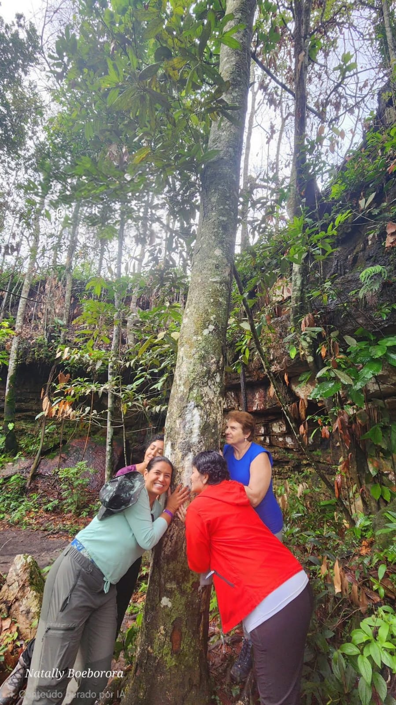
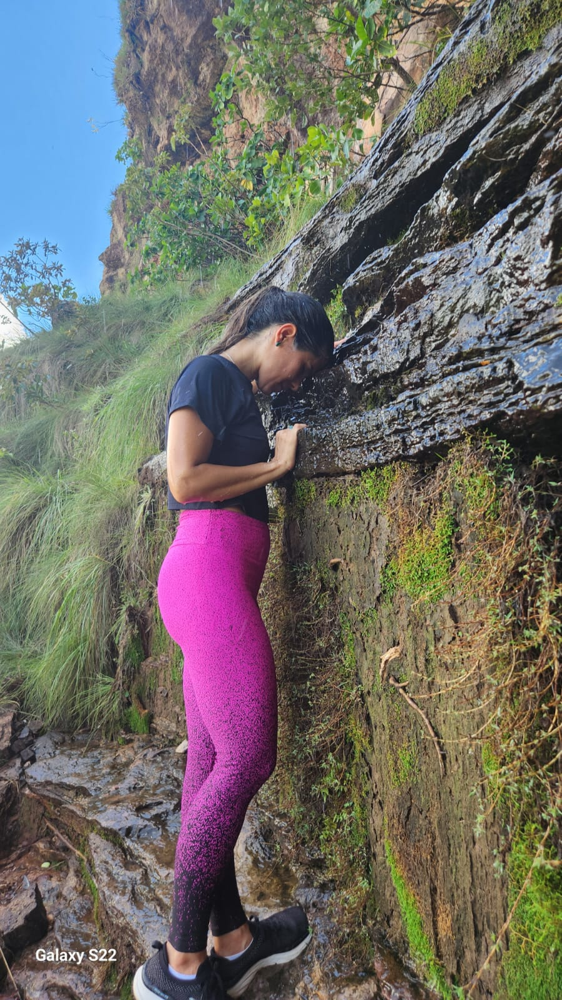

Terapia Florestal & Natureza
Cura, bem-estar e autoconhecimento através da conexão com a natureza
Curando-se através da Natureza
Com certificação em Terapia Florestal, ofereço experiências terapêuticas que integram a ciência do bem-estar com a sabedoria ancestral da floresta.
- Sessões de Terapia Florestal (Forest Bathing - Shinrin-yoku)
- Programas de bem-estar na natureza
- Práticas meditativas em ambientes naturais
- Autoconhecimento através da conexão com ecossistemas
- Redução de estresse e ansiedade na natureza
- Workshops de ressignificação pessoal
Cada sessão é personalizada para suas necessidades específicas, criando um espaço seguro para transformação pessoal e recuperação emocional.
Agendar SessãoBenefícios da Terapia Florestal
🧘 Bem-estar Mental
Redução de estresse, ansiedade e depressão
💚 Saúde Emocional
Cura emocional e equilibrio psicológico
🌿 Conexão Profunda
Reconexão com a natureza e consigo mesmo
✨ Transformação Pessoal
Crescimento espiritual e autoconhecimento
Registros

